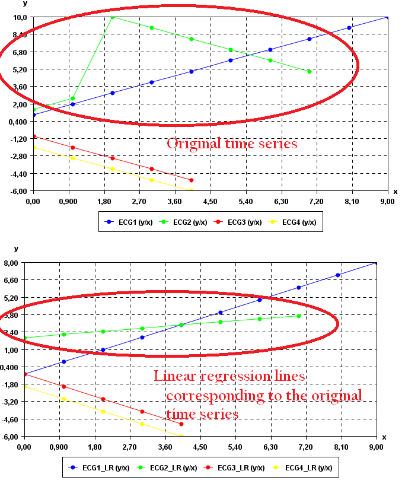

Calculate the regression line of a time series with the least square method, and perform time series forecasting (SPMF documentation)
This example explains how to calculate the regression line of a time series with the least square method using the SPMF open-source data mining library.
How to run this example?
- If you are using the graphical interface, (1) choose the "Calculate_linear_regression_of_time_series_(least_squares)" algorithm, (2) select the input file "contextSAX.txt", (3) set the separator to the comma ',' and then (4) click "Run algorithm".
- If you want to execute this example from the command line,
then execute this command:
java -jar spmf.jar run Calculate_linear_regression_of_time_series_(least_squares) contextSAX.txt output.txt ,
in a folder containing spmf.jar and the example input file contextSAX.txt. - If you are using the source code version of SPMF, to run respectively this example, launch the file "MainTestTimeSeriesLinearRegressionLeastSquaresFromFile.java"in the package ca.pfv.SPMF.tests.
What is the calculation of the regression line for a time series?
Let there be a time series (a series of vectors or points). The task of regression consists of trying to fit a line to replace these points such that the line minimizes the error the original points. There exists various methods for performing regression. This implementation relies on the least square method. This method consists of finding the line that minizes the least squared distances between original points and the regression line.
The output of regression is a regression line, which is here described by a linear function. This regression line can then be used for making predictions (time series forecasting).
In the source code version of SPMF, regression lines can also be used to perform predictions (time series forecasting - see details below).
What is the input of this algorithm?
The input is one or more time series. A time series is a sequence of floating-point decimal numbers (double values). A time-series can also have a name (a string).
Time series are used in many applications. An example of time series is the price of a stock on the stock market over time. Another example is a sequence of temperature readings collected using sensors.
For this example, consider the four following time series:
| Name | Data points |
| ECG1 | 1,2,3,4,5,6,7,8,9,10 |
| ECG2 | 1.5,2.5,10,9,8,7,6,5 |
| ECG3 | -1,-2,-3,-4,-5 |
| ECG4 | -2.0,-3.0,-4.0,-5.0,-6.0 |
This example time series database is provided in the file contextSAX.txt of the SPMF distribution.
In SPMF, to read a time-series file, it is necessary to indicate the "separator", which is the character used to separate data points in the input file. In this example, the "separator" is the comma ',' symbol.
What is the output?
The output is the regression lines of the time series received as input. Each original time series is replaced by its regression line, calculated using the least square method. A regression line is a linear equation.
For example, in the above example, if the window size is set to 4 data points, the result is:
| Name | Data points |
| ECG1_LR | -1.0,0.0,1.0,2.0,3.0,4.0,5.0,6.0,7.0,8.0 |
| ECG2_LR | 1.9536489151873766,2.206114398422091,2.4585798816568047,2.7110453648915187,2.9635108481262327,3.2159763313609466,3.4684418145956606,3.720907297830375 |
| ECG3_LR | -1.0,-2.0,-3.0,-4.0,-5.0 |
| ECG4_LR | -2.0,-3.0,-4.0,-5.0,-6.0 |
To see the result visually, it is possible to use the SPMF time series viewer, described in another example of this documentation. Here is a figure showing the oriignal time series (top) and the resulting regression lines corresponding to these time series.

Since the 1st, 3rd and 4th time series are already linear equations, the regression lines for these time series are identical to the original time series.
The 2nd time series (in green) is more interesting. It can be seen that the regression line is different from the corresponding original time series (in green). This is because the original time series is not a linear equation.
Input file format
The input file format used by the time series viewer defined as follows. It is a text file. The text file contains one or more time series. Each time series is represented by two lines in the input file. The first line contains the string "@NAME=" followed by the name of the time series. The second line is a list of data points, where data points are floating-point decimal numbers separated by a separator character (here the ',' symbol).
For example, for the previous example, the input file is defined as follows:
@FILETYPE="Time series database"
@SOURCE="SPMF SOFTWARE https://philippe-fournier-viger.com/spmf/"
@NAME=ECG1
1,2,3,4,5,6,7,8,9,10
@NAME=ECG2
1.5,2.5,10,9,8,7,6,5
@NAME=ECG3
-1,-2,-3,-4,-5
@NAME=ECG4
-2.0,-3.0,-4.0,-5.0,-6.0
The first two lines are metadata indicating the type of file and the source of the data. Then, the following lines are the data. Consider the first two lines of data. It indicates that the first time series name is "ECG1" and that it consits of the data points: 1, 2, 3, 4, 5, 6, 7, 8, 9, and 10. Then, three other time series are provided in the same file, which follows the same format.
Output file format
The output file format is the same as the input format.
@FILETYPE="Time series database"
@SOURCE="SPMF SOFTWARE https://philippe-fournier-viger.com/spmf/"
@NAME=ECG1_LR -1.0,0.0,1.0,2.0,3.0,4.0,5.0,6.0,7.0,8.0
@NAME=ECG2_LR 1.9536489151873766,2.206114398422091,2.4585798816568047,2.7110453648915187,2.9635108481262327,3.2159763313609466,3.4684418145956606,3.720907297830375
@NAME=ECG3_LR -1.0,-2.0,-3.0,-4.0,-5.0
@NAME=ECG4_LR -2.0,-3.0,-4.0,-5.0,-6.0
Using regression to perform predictions (time series forecasting)
In the source code version, additional features are implemented such as using the regression lines for making prediction (time series forecasting). There is an example "MainTestTimeSeriesLinearRegressionLeastSquare" in the package ca.pfv.spmf.tests of SPMF that shows how to use this feature.
For example, for the time series -1, -2.8, -3, -3, -3, -3.2, -2, it is found that the linear equation of the regression line is : Y(x) = 0.42469879518072196 + -1.0015060240963858 * x.
Using this equation it is possible to make predictions. For example, we can predict that if x = 11 than y = -10.59186746987952.
Where can I get more information about the moving average?
The regression line using the least square metohd is a very basic operation for time series. It is described in many websites and books.